9Práctica 2. Análisis de los rendimientos en fabricación de queso mediante Python
Documento en elaboración
En esta práctica utilizaremos un conjunto de datos que provienen de una fábrica de queso tipo ibérico. Con los valores analíticos calcularemos los rendimientos queseros utilizando Python, y nos apoyaremos en diferentes tipos de gráficos para explicar los resultados que hemos obtenido. Utilizaremos los datos calculados aquí para hacer un balance de materia y calcular las pérdidas de nuestra fabricación.
Para ayudar a concentrarse en los resultados, el código python se presenta plegado, de manera que no interfiera demasiado en la presentación. Puede desplegarse para ver cómo se han generado cada tabla y cada gráfico.
Como siempre, es opcional descargar los datos de ejemplo y abrir el cuaderno en Colab para ejecutar el código a medida que se avanza ne el estudio.
Empezamos el análisis inicializando las bibliotecas de Python, cargamos los datos del CSV, creamos el índice de fecha y mostramos los primeros registros del dataframe para comprobar que todo es correcto.
Mostrar código
import pandas as pdimport matplotlib.pyplot as pltimport seaborn as snssns.set_style("whitegrid")url_datos ='https://raw.githubusercontent.com/juanriera/master-queseria/master/datos/fab_queso_bm_limpio.csv'try: df = pd.read_csv(url_datos, decimal =",", sep=';', encoding='ISO-8859-1')exceptExceptionas e:print(f"Error al cargar el archivo: {e}")# crear index con fechadf['fecha_index'] = pd.to_datetime( df['fecha'], format='%d/%m/%Y', # Formato Día/Mes/Año confirmado errors='coerce'# Clave: convierte los valores que no puede leer a NaT (Not a Time))# 2. Limpiar NaT y establecer el índicedf.dropna(subset=['fecha_index'], inplace=True)df.set_index('fecha_index', inplace=True)df.sort_index(inplace=True)df.head()
fecha
receta
litros_past
kg_cuba
est_cuba
mg_cuba
mp_cuba
lactosa_cuba
ph_final_moldeo_cuba
formato
est_salida_salmuera
mg_salida_salmuera
ph_salida_salmuera
peso_queso_total
sal_queso
fecha_index
2022-02-23
23/02/2022
bajo mg
12330
12860.510
10.28
2.46
3.38
4.44
6.46
3 kg
50.85
20.34
5.44
1419.3
1.47
2022-02-24
24/02/2022
mezcla
7500
7704.462
12.80
4.90
3.89
4.01
6.35
barra
59.42
32.13
5.40
1062.4
1.31
2022-03-01
01/03/2022
bajo mg
13030
13867.370
10.41
2.47
3.43
4.51
6.40
barra
52.10
21.15
5.34
1536.0
1.17
2022-03-01
01/03/2022
vaca
14820
15810.990
12.85
5.03
3.97
3.85
6.38
barra
55.94
30.50
5.41
2351.0
1.55
2022-03-04
04/03/2022
oveja
11890
12344.190
14.37
5.86
4.55
3.96
6.42
barra
57.60
31.99
5.42
2051.0
NaN
En total, tenemos 45 entradas que corresponden a fabricaciones diarias, desde el 23/02/2022 hasta el 30/5/2022.
El fichero de datos incluye diferentes datos analíticos:
Columna
Descripción
fecha
día de fabricación
receta
tipo de queso fabricado
litros_past
litros de leche enviados a pasteurización
kg_cuba
cantidad de leche recibida en cuba, en kilos
est_cuba
extracto seco de la leche en la cuba
mg_cuba
materia grasa de la leche en la cuba
mp_cuba
materia proteica de la leche en la cuba
lactosa_cuba
lactosa de la leche en la cuba
ph_final_moldeo_cuba
pH del queso al final del proceso de moldeo
formato
formato de moldeo
est_salida_salmuera
extracto seco total del queso después del salado
mg_salida_salmuera
materia grasa del queso después del salado
ph_salida_salmuera
pH del queso después del salado
peso_queso_total
peso del queso después del salado
sal_queso
porcentaje de sal analizada en el queso
El queso se fabrica en varias recetas, y se envasa en diferentes formatos:
Receta
Formatos
Comentario
i+D (ensayos)
3 kg, 500 g, barra
bajo mg
3 kg, 500 g, barra
Queso con bajo contenido en MG
mezcla
3 kg, 500 g, barra
oveja
barra
vaca
barra
El fichero de datos contiene varios ensayos del departamento de i+D que se han mantenido para mostrar que a veces las cosas no salen bien a la primera…
9.1 Presentación de algunos gráficos básicos
Vamos a explorar los datos antes de empezar el análisis, y los usaremos para visualizar las diferencias de rendimiento entre mezclas.
Podemos calcular el rendimiento simple como los kilos de queso que podemos obtener con 100 L de leche
sns.boxplot(data=df, x='receta', y='rendimiento_simple')plt.xticks(rotation=0, ha='right')plt.title('Rendimiento por receta (orden alfabético)')plt.xlabel('Receta')plt.ylabel('Kilos obtenidos con 100 L de leche')plt.tight_layout()plt.show()
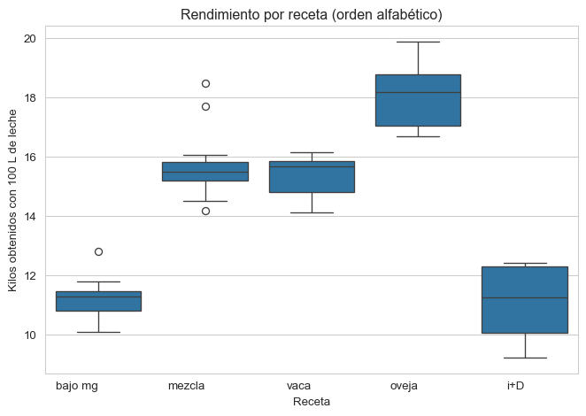
Aunque es más frecuente calcular el rendimiento simple como los litros de leche que necesitamos para hacer un kilo de queso
sns.boxplot(data=df, x='receta', y='rendimiento_simple')plt.xticks(rotation=0, ha='right')plt.title('Boxplot: rendimiento simple por receta')plt.xlabel('Receta')plt.ylabel('Litros necesarios para obtener 1 kg de queso')plt.tight_layout()plt.show()
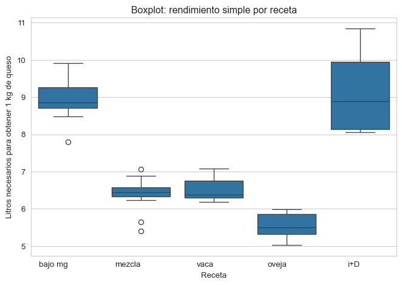
El boxplot es muy útil para resumir grandes cantidades de información, pero cuando el número de puntos es muy bajo, puede resultarnos más útil la visualización mediante otro tipo de gráficos que nos muestren los puntos individuales agrupados. Entre estas visualizaciones, la biblioteca seaborn nos ofrece el gráfico llamado beeswarm mediante la función swarmplot(), y también el dotplot, mediante la función stripplot().
Mostrar código
sns.swarmplot(data=df, x='receta', y='rendimiento_simple', size=5)plt.xticks(rotation=0) # es opcional rotar lo rótulos para mejorar la visibilidad cuando los titulos son largos y se solapanplt.title('Beeswarm: rendimiento simple por receta')plt.xlabel('Receta')plt.ylabel('Litros de leche necesarios para obtener 1 kg de queso')plt.tight_layout()plt.show()
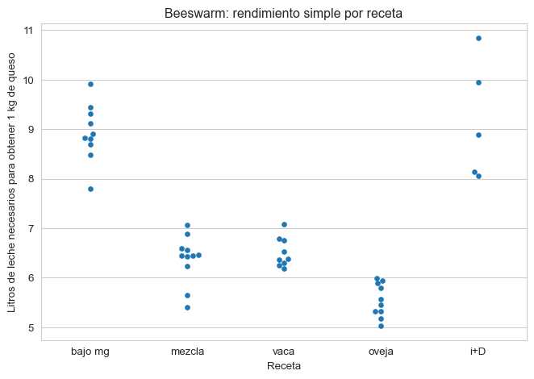
El stripplot muestra los puntos en distribución vertical sobre las categorías; para evitar que los puntos con las mismas coordenada se solapen, utilizamos la opción jitter, que introduce un pequeño ruido aleatorio para desplazar las coordenadas de los puntos evitando su solapamiento.
Mostrar código
sns.stripplot(data=df, x='receta', y='rendimiento_simple', jitter=True, size=5)plt.xticks(rotation=0)plt.title('Dotplot con jitter: rendimiento por receta')plt.tight_layout()plt.show()
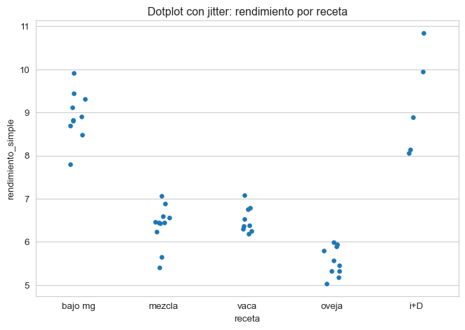
Este diagrama puede superponerse al boxplot, lo que nos permite completar la visualización de los puntos y la interpretación que hace el boxplot de su distribución.
Utilizando el beeswarm, hemos visto las de rendimiento simple entre las diferentes recetas. Veamos también si el formato en el que ha sido moldeado el queso puede haber influido en los valores de rendimiento obtenidos, para todos los productos, ¿quizás por pérdidas de producto en el moldeo?
Mostrar código
sns.swarmplot(data=df, x='formato', y='rendimiento_simple', size=5)plt.xticks(rotation=0)plt.title('Beeswarm: rendimiento por receta')plt.tight_layout()plt.show()
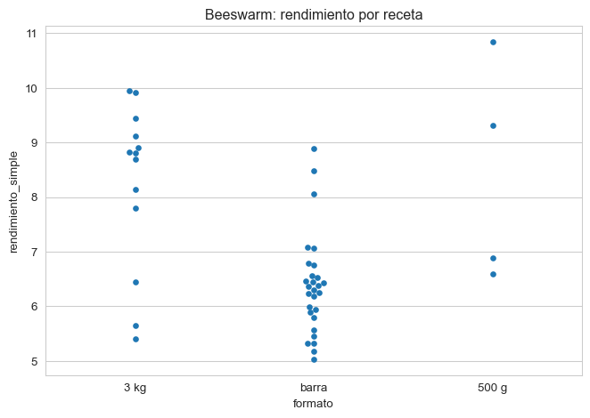
A la vista de la gráfica, parece que el moldeo en barra nos hace empeorar el rendimiento. Pero si miramos con más detalle, vemos que no es así. Si introducimos un código de color para cada receta, vemos que los rendimientos de las diferentes recetas son aproximadamente los mismos con independencia del formato.
Mostrar código
sns.swarmplot(data=df, x='formato', y='rendimiento_simple', hue='receta', size=5)plt.xticks(rotation=0)plt.title('Beeswarm: rendimiento por receta')# Mover la leyenda fuera del gráficoplt.legend(bbox_to_anchor=(1.05, 1), loc='upper left', borderaxespad=0.)plt.tight_layout()plt.show()
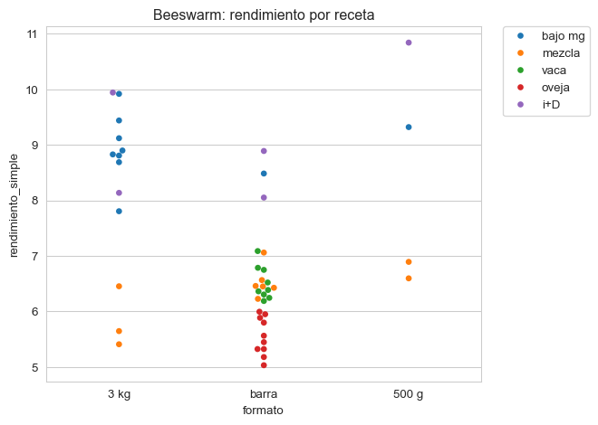
Esto nos ayuda a comprender que no debemos sacar conclusiones apresuradas antes de haber completado el análisis detallado de la información disponible. En realidad, si vemos los valores de rendimiento por receta (colores), en cada tipo de queso el rendimiento es muy semejante, con independencia del formato.
Como estamos evaluando el rendimiento como los litros necesarios para obtener 1 kg de queso, resulta que la cantidad de agua que tenga el queso nos influye en el cálculo: cuanto más húmedo el queso, más favorable será el valor el rendimiento simple. Fijémonos en el queso de mezcla: hay un valor de rendimiento muy favorable, de poco más de 5 L/kg de queso, pero vemos que el queso ha tenido casi un 52% de humedad. En cambio, otra fabricación de esa misma receta, que sólo tiene algo más de 40% de humedad, ha necesitado 7 L/kg.
Así, dentro de cada receta, los mejores rendimientos en L/kg aparecen siempre en quesos más húmedos, y los peores, en quesos más secos. Veámoslo creando una columna adicional para los valores d humedad.
# Crear columna de humedaddf['humedad_salida_salmuera'] =100- df['est_salida_salmuera']
Mostrar código
# crear dataframe para seaborn sin index para evitar erroresdf_plot_sns = df.reset_index(drop=True)# Crear gráfico con regresión lineal por recetag = sns.lmplot( data=df_plot_sns, x='rendimiento_simple', y='humedad_salida_salmuera', hue='receta', ci=None, scatter_kws={'s': 80, 'alpha': 0.7}, line_kws={'linewidth': 2})# Eliminar la leyenda generada por FacetGridg._legend.remove()# Personalizar título y ejesg.fig.suptitle('Influencia de la humedad del queso en la evaluación del rendimiento en litros/kilo', y=1.03)g.set_axis_labels('Rendimiento simple (litros/kilo)', 'Humedad del queso a salida de salmuera')g.ax.grid(True, linestyle='--', alpha=0.7)# Mover la leyenda fuera del gráficoplt.legend(bbox_to_anchor=(1.05, 1), loc='upper left', borderaxespad=0.)plt.tight_layout()plt.show()
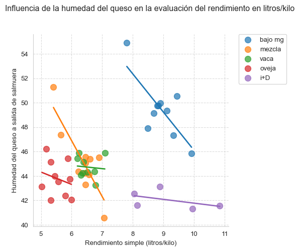
Por esta razón, debemos calcular el rendimiento mediante parámetros que no se vean afectados por la humedad del queso, sino que reflejen con precisión la calidad del trabajo quesero. La mejor forma de hacerlo consiste en calcular el porcentaje de materia quesera que hemos sido capaces de retener en el queso. Dado que los elementos de valor de la leche, que son los que se utilizan en el pago por calidad, son la materia grasa y la proteína, calcularemos la recuperación de materia grasa, de materia proteica y de extracto seco magro.
Estos valores son propios de cada tecnología quesera, y cada uno sirve de referencia para comprender cuáles son los diferentes problemas en fabricación,
Una mala retención de materia grasa
Una mala retención de proteína
Una mala retención de extracto seco magro
Dado que nuestros valores analíticos están expresados en porcentaje en peso, calculamos las cantidades de materia como se indica a continuación:
### 1. Cálculos de Entradadf['est_kg_cuba'] = df['kg_cuba'] * df['est_cuba'] /100df['mg_kg_cuba'] = df['kg_cuba'] * df['mg_cuba'] /100df['mp_kg_cuba'] = df['kg_cuba'] * df['mp_cuba'] /100df['esm_kg_cuba'] = df['est_kg_cuba'] - df['mg_kg_cuba'] ### 2. Cálculos de Salidadf['est_kg_queso'] = df['peso_queso_total'] * df['est_salida_salmuera'] /100df['mg_kg_queso'] = df['peso_queso_total'] * df['mg_salida_salmuera'] /100df['esm_kg_queso'] = df['est_kg_queso'] - df['mg_kg_queso']df['sal_kg_queso'] = df['peso_queso_total'] * df['sal_queso']/100### 3. Coeficientes de recuperación (expresado en porcentaje)df['coef_recup_mg'] = df['mg_kg_queso']/df['mg_kg_cuba'] *100df['coef_recup_mp'] = df['esm_kg_queso']/df['mp_kg_cuba'] *100# atencion a la fórmula de cálculo, deberia ser mp_kg_quesodf['coef_recup_esm'] = df['esm_kg_queso']/df['esm_kg_cuba'] *100### 4. Consumos de materia por kilo de queso (expresado en gramos de materia por kilo de queso)df['consumo_mg_kg'] = df['mg_kg_cuba'] / df['peso_queso_total'] *1000df['consumo_mp_kg'] = df['mp_kg_cuba'] / df['peso_queso_total'] *1000
Comparemos ahora la recuperación de materia medida por estos coeficientes entre recetas.
Mostrar código
# crear dataframe para seaborn sin index para evitar erroresdf_sns = df.reset_index(drop=True)sns.swarmplot(data=df_sns, x='receta', y='coef_recup_mg', size=5)plt.xticks(rotation=0)plt.title('Beeswarm: rendimiento por receta')plt.tight_layout()plt.show()
Mostrar código
sns.swarmplot(data=df_sns, x='receta', y='coef_recup_mp', size=5)plt.xticks(rotation=0)plt.title('Beeswarm: rendimiento por receta')plt.tight_layout()plt.show()
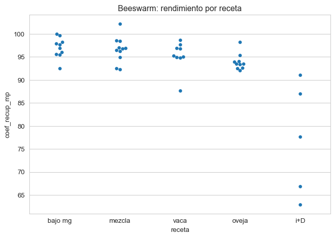
Mostrar código
sns.swarmplot(data=df_sns, x='receta', y='coef_recup_esm', size=5)plt.xticks(rotation=0)plt.title('Beeswarm: rendimiento por receta')plt.tight_layout()plt.show()
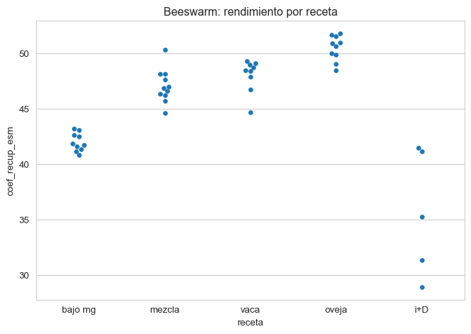
Mostrar código
sns.scatterplot(data=df_sns, x='coef_recup_mg', y='coef_recup_mp', hue='receta', s=80, alpha=0.7)plt.title('Rendimientos de MP y MG en fabricación de queso')plt.xlabel('Coeficiente recuperación MG')plt.ylabel('Coeficiente recuperación MP')plt.legend(title='Receta') # Mostrar leyenda para la especieplt.grid(True, linestyle='--', alpha=0.7)plt.show()
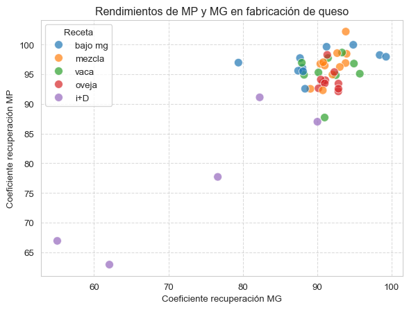
Filtremos los resultados de i+D que no son relevantes para nuestro análisis y están distorionando la escala del gráfico.
Mostrar código
sns.scatterplot(data=df[df['receta'] !='i+D'], x='coef_recup_mg', y='coef_recup_mp', hue='receta', s=80, alpha=0.7)plt.title('Rendimientos de MP y MG en fabricación de queso')plt.xlabel('Coeficiente recuperación MG')plt.ylabel('Coeficiente recuperación MP')plt.legend(title='Receta') # Mostrar leyenda para la especieplt.grid(True, linestyle='--', alpha=0.7)plt.show()
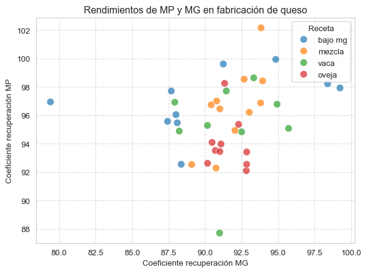
Calculemos los centroides de cada grupo (receta) mediante la mediana.
Mostrar código
# Filtrar receta 'i+D'df_filtrado = df[df['receta'] !='i+D'].reset_index(drop=True)# Crear paleta de colores por recetarecetas = df_filtrado['receta'].unique()palette = sns.color_palette('tab10', n_colors=len(recetas))color_dict =dict(zip(recetas, palette))sns.scatterplot(data=df[df['receta'] !='i+D'], x='coef_recup_mg', y='coef_recup_mp', hue='receta', palette = color_dict, s=80, # edgecolor = 'black', alpha=0.7)# Calcular y dibujar centroidescentroides = df.groupby('receta')[['coef_recup_mg', 'coef_recup_mp']].median()for receta in recetas: centro = centroides.loc[receta] plt.scatter( centro['coef_recup_mg'], centro['coef_recup_mp'], color=color_dict[receta], marker='X', s=150, edgecolor='black', label=f'Centroide {receta}' )plt.title('Rendimientos de MP y MG en fabricación de queso')plt.xlabel('Coeficiente recuperación MG')plt.ylabel('Coeficiente recuperación MP')plt.legend(title='Receta') # Mostrar leyenda para la especie# Mover la leyenda fuera del gráficoplt.legend(bbox_to_anchor=(1.05, 1), loc='upper left', borderaxespad=0.)plt.grid(True, linestyle='--', alpha=0.7)plt.show()
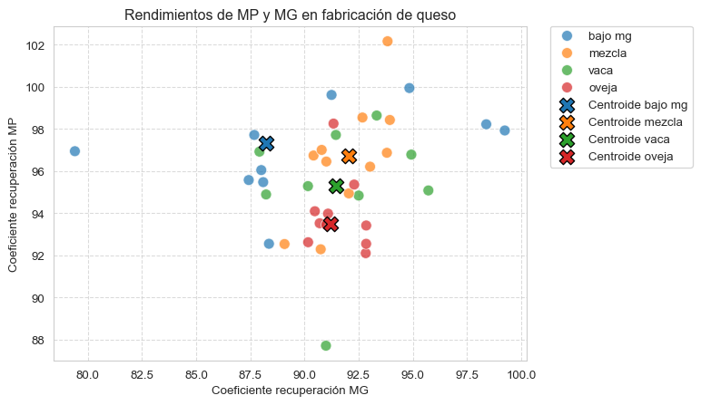
Mostrar código
sns.scatterplot(data=df[df['receta'] !='i+D'], x='coef_recup_mg', y='coef_recup_esm', hue='receta', palette = color_dict, s=80, # edgecolor = 'black', alpha=0.7)# Calcular y dibujar centroidescentroides = df.groupby('receta')[['coef_recup_mg', 'coef_recup_esm']].median()for receta in recetas: centro = centroides.loc[receta] plt.scatter( centro['coef_recup_mg'], centro['coef_recup_esm'], color=color_dict[receta], marker='X', s=150, edgecolor='black', label=f'Centroide {receta}' )plt.title('Rendimientos de MG y ESM en fabricación de queso')plt.xlabel('Coeficiente recuperación MG')plt.ylabel('Coeficiente recuperación ESM')plt.legend(title='Receta') # Mostrar leyenda para la especie# Mover la leyenda fuera del gráficoplt.legend(bbox_to_anchor=(1.05, 1), loc='upper left', borderaxespad=0.)plt.grid(True, linestyle='--', alpha=0.7)plt.show()
Finalmente, aprovechamos nuestros cálculos para crear un documento con los rendimientos y el balance de materia de la fabricación, que exportaremos a un ‘csv’ y que podemos analizar sea en python o en Excel mediante tablas dinámicas.
Mostrar código
### 5. Balance de Materia (Salida - Entrada)# La falta de producto queda como negativo al hacer Salida - Entradadf['balance_est'] = df['est_kg_queso'] - df['est_kg_cuba']df['balance_mg'] = df['mg_kg_queso'] - df['mg_kg_cuba']df['balance_esm'] = df['esm_kg_queso'] - df['esm_kg_cuba'] - df['sal_kg_queso']### 6. Preparación y Exportación del DataFrame de Resultados# Columnas finales a incluir en el reportecolumnas_balance = ['fecha', 'receta', 'formato','litros_past', 'peso_queso_total','est_kg_cuba', 'est_kg_queso', 'mg_kg_cuba', 'mg_kg_queso', 'mp_kg_cuba','esm_kg_cuba', 'esm_kg_queso', 'balance_est', 'balance_mg', 'balance_esm','coef_recup_mg', 'coef_recup_mp', 'coef_recup_esm','consumo_mg_kg', 'consumo_mp_kg']# Crear un nuevo DataFrame con las columnas de interésdf_balance = df[columnas_balance].copy()# Guardar el DataFrame con punto decimal y separador ';'nombre_archivo_salida ='datos/informe_balance_materia.csv'df_balance.to_csv( nombre_archivo_salida, sep=';', index=False, decimal=',')
Ahora vamos a crear un nuevo csvcon el balance de materia semanal, aprovechando las funciones de pandaspara crear una columna de semana ISO.
Mostrar código
# 1. Crear la columna 'semana' usando el formato ISO (Lunes=Día 1)# Usamos el índice del DataFrame (que debe ser DatetimeIndex)df['semana_iso'] = df.index.strftime('%G-W%V') print("✅ Columna 'semana_iso' creada con el estándar Lunes-Domingo.")
✅ Columna 'semana_iso' creada con el estándar Lunes-Domingo.
Mostrar código
# Columnas que queremos sumarizar (Balances + Entradas + Salidas)columnas_a_sumarizar = [# Entradas'est_kg_cuba', 'mg_kg_cuba', 'esm_kg_cuba',# Salidas'est_kg_queso', 'mg_kg_queso', 'esm_kg_queso',# Balances'balance_est', 'balance_mg', 'balance_esm']# 2. Agrupar por 'semana_iso' y 'receta' y calcular la SUMA de todas las columnasdf_balance_semanal_completo = df.groupby(['semana_iso', 'balance_mg'])[columnas_a_sumarizar].sum()# Renombrar las columnas para indicar que son totalesdf_balance_semanal_completo.columns = [f'total_{col}'for col in columnas_a_sumarizar]
Mostrar código
# 1. Definir el nombre del archivo de salidanombre_archivo_final ='datos/reporte_balance_completo_semanal_iso.csv'# 2. Exportar el DataFrame a CSVdf_balance_semanal_completo.to_csv( nombre_archivo_final, sep=';', # Usa punto y coma como separador de columnas index=True, # Mantiene las columnas de agrupación ('semana_iso' y 'receta') decimal=','# Usa coma como separador decimal)
Mostrar código
df_sns = df_balance_semanal_completo.reset_index(drop=False) # False mantiene la columna index como columna normal
Mostrar código
sns.lineplot(x='semana_iso', y='balance_mg', data=df_sns)# Opcional: mejorar la visualizaciónplt.title('Distribución de balance_mg por semana')plt.xlabel('Semana')plt.ylabel('Balance (mg)')plt.xticks(rotation=45) # Si los nombres de semana son largosplt.show()
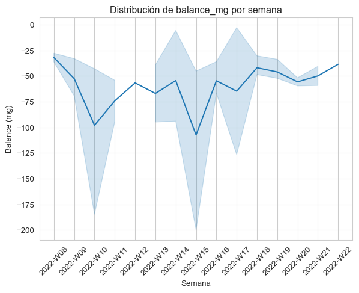
Mostrar código
# Convertir semana_iso a números temporalesdf_sns['semana_num'] = pd.factorize(df_sns['semana_iso'])[0]# Dibujar la línea de tendencia con regplotsns.regplot( x='semana_num', y='balance_mg', data=df_sns, scatter=True, x_jitter=0.2, # añade jitter horizontal y_jitter=0.2, # añade jitter vertical ci=None, line_kws={'color': 'red'},)# Reemplazar los ticks del eje X con las etiquetas originalesplt.xticks( ticks=df_sns['semana_num'], labels=df_sns['semana_iso'], rotation=45)# Mejorar visualizaciónplt.title('Distribución de balance_mg con línea de tendencia')plt.xlabel('Semana')plt.ylabel('Balance (mg)')plt.tight_layout()plt.show()
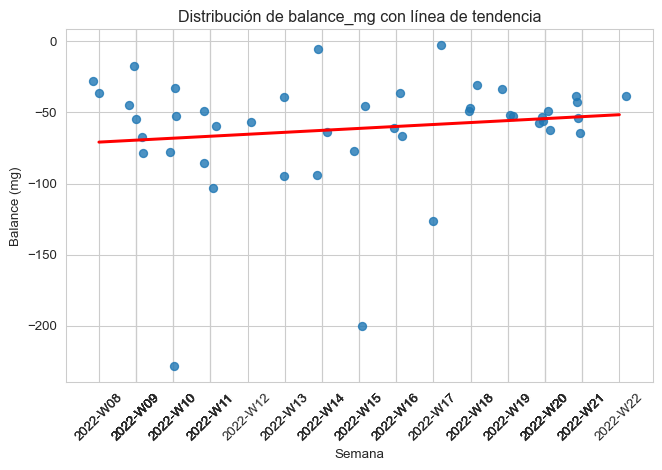
Mostrar código
# Crear el boxplotsns.boxplot(x='semana_iso', y='balance_mg', data=df_sns)# Opcional: mejorar la visualizaciónplt.title('Distribución de balance_mg por semana')plt.xlabel('Semana')plt.ylabel('Balance (mg)')plt.xticks(rotation=45) # Si los nombres de semana son largosplt.show()
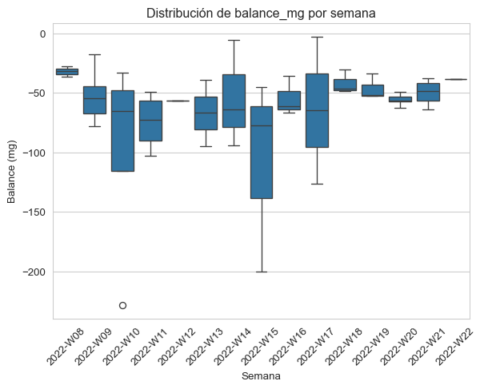
Veamos las características de los quesos, excluyendo ya los ensayos de I+D